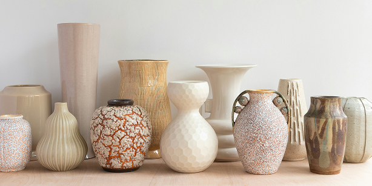
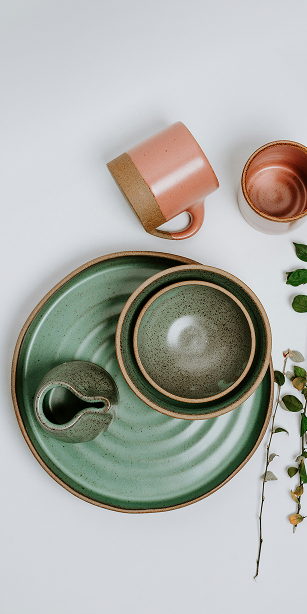
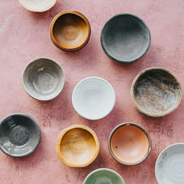
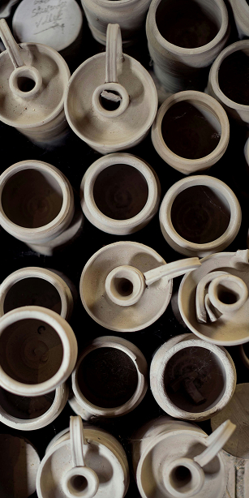
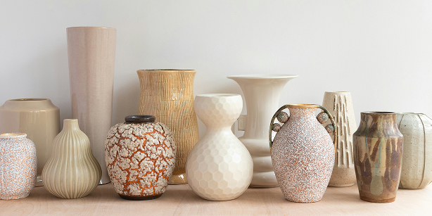
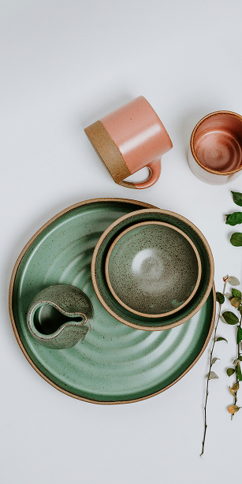
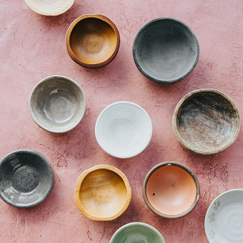
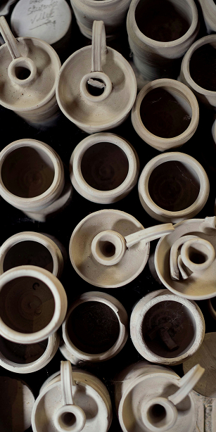

At Handcrafted Harmony, we blend craftsmanship and creativity into every piece. Born from a love for the
timeless art of ceramics, our journey began in 1996 in Marrakech, when our founder, Linda Larsson,
discovered the magic of molding clay into beautiful works of art.
What started as a personal hobby soon grew into a business, driven by a passion for creating functional
ceramics
that tell a story. Each piece is carefully crafted with attention to detail, offering more than just utility —
it’s an experience.
Rooted in sustainability and ethical craftsmanship, we work with local artisans to ensure our creations are as
responsible as they are beautiful. We believe that true artistry thrives in harmony with nature, and we’re
dedicated to minimizing our environmental impact.
Thank you for visiting Handcrafted Harmony. We hope our ceramics bring warmth and beauty to your home.